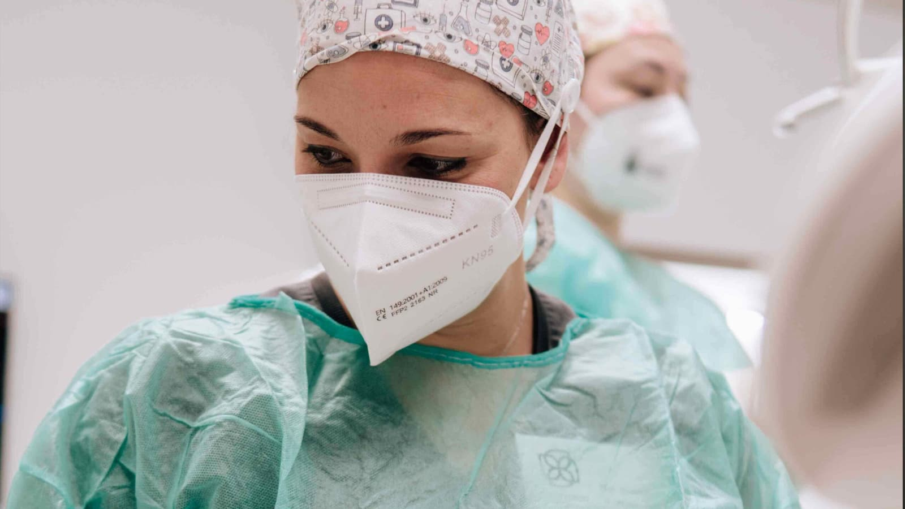
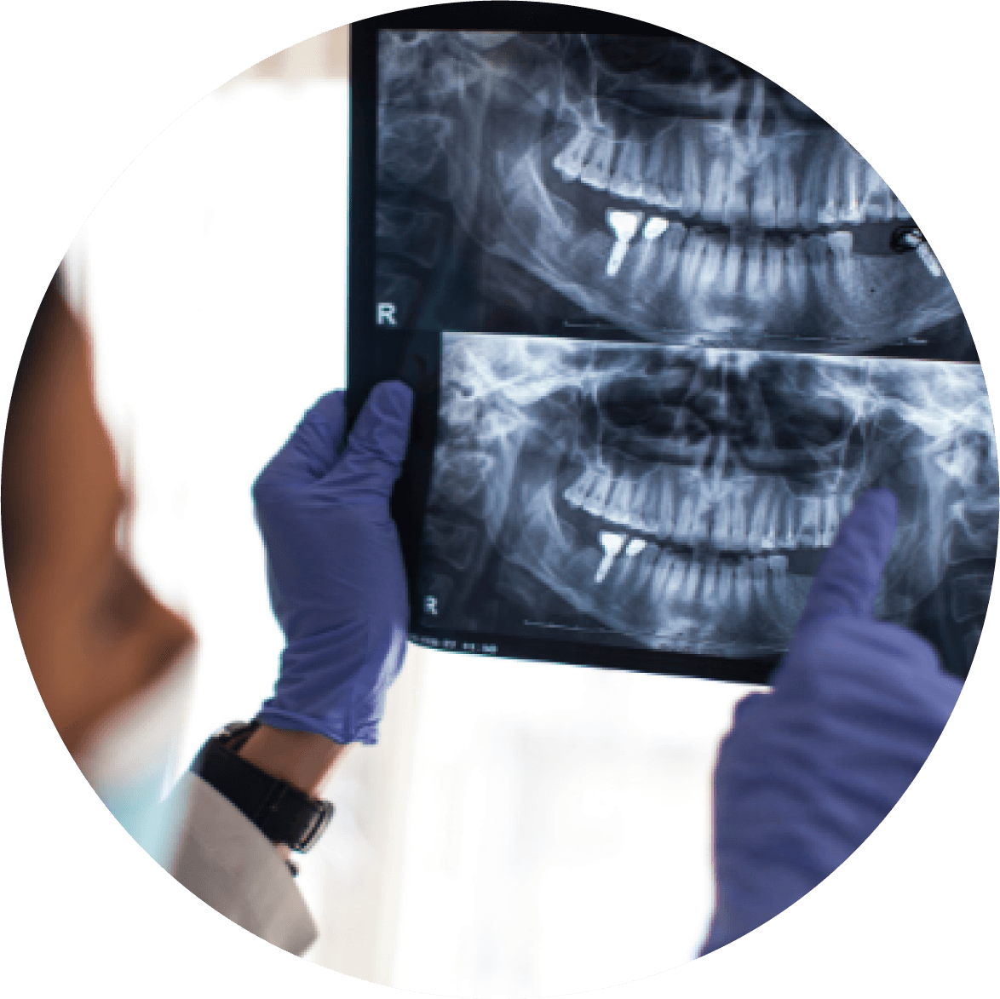

Especialidad
Cirugía dental
«La odontología actual busca aliviar el dolor, no provocarlo»

¿Qué es la cirugía dental?
La Cirugía dental y Maxilofacial es la especialidad médica que se dedica al diagnóstico y tratamiento quirúrgico de las enfermedades, traumatismos y malformaciones. Tienen que ver con aspectos funcionales y estéticos de los tejidos duros y blandos de la cabeza, boca, dientes, encías, mandíbula, maxilar y cuello.
Nuestro equipo de cirujanos con formación continuada en másteres de renombre y prestigio te aconsejarán debidamente y te podrán aplicar técnicas y conocimientos actuales, precisos, mínimamente invasivos y seguros. El primer paso es tratar de ser lo más conservadores posibles y estudiar como solucionar el problema sin necesidad de cirugía. Pero existen casos más complicados en los que es necesaria la intervención con cirugía. Una correcta anestesia local y unas pautas de tratamiento analgésicas y antiinflamatorias harán que el proceso sea más cómodo. El objetivo siempre será facilitar la rutina diaria a nuestros pacientes, empleando la técnica más adecuada a sus necesidades y personificando su caso. Nuestra cirujana se encargará de buscar la mejor alternativa de tratamiento y explicarte las mejores opciones. Puedes pedirnos cita y estudiaremos tu caso. Tu confianza es nuestro compromiso.
Cirugía dental – recomendaciones generales
Una cirugía dental se realiza buscando una serie de ventajas a posteriori en tu salud, aunque en el momento de terminar la intervención te explicaremos una serie de recomendaciones para que tu post-operatorio sea lo más cómodo posible.
Las recomendaciones comunes a casi todas las cirugías son:
- Aplicar frío sobre la zona intervenida tras finalizar la intervención.
- Seguir estrictamente la pauta de medicación (antibióticos, analgésicos y antiinflamatorios) que te recomendemos.
- Reposo relativo el día de la intervención.
- Dieta fría y blanda 24 horas.
- No realizar enjuagues ni cepillarse la zona en 24 horas.
- Al día siguiente comenzar con enjuagues de agua con sal (1 litro + 1 cucharada).
- Aplicación de gel de Clorhexidina (antiséptico) en la zona al menos 3 veces al día.
Algunas cosas que te recomendamos evitar en tu recuperación son:
- Cargar peso, hacer ejercicio u otros esfuerzos físicos.
- Fumar.
- Beber alcohol.
- Masticar alimentos duros.
- Cepillarse enérgicamente.
- Enjuagarse.
Conviene conocer estos consejos porque, aunque pueden parecer obvios, los pacientes desean volver a su «vida normal» lo más rápido posible y no tener en cuenta esto, podría alargar o complicar el post-operatorio.
Cirugía dental – extracción de molar de juicio
Los problemas con la erupción de los molares del juicio (cordales) es cada día más frecuente. La teoría es que, en la evolución del hombre, el tamaño de el maxilar superior y de la mandíbula se va reduciendo por lo que existe una falta de espacio que impide el desarrollo normal de todos los dientes. Esta falta de espacio se convierte a menudo en problemas del tipo de infecciones (sobre todo cuando está parcialmente comunicado con la boca), daño a los dientes vecinos (caries, periodontitis), quistes y ocasionalmente tumores. Se suele recomendar la visita al cirujano entre los 17 y 20 años porque las raíces estarán menos desarrolladas y el hueso es menos denso que en edades más adultas. Te realizaremos una sencilla radiografía para saber si es necesaria la extracción.
En nuestra clínica te realizaremos esta intervención con técnicas seguras para optimizar los resultados y tu pronta recuperación, pregúntanos cualquier duda.
Cirugía dental – fenestraciones de piezas dentales
La fenestración consiste en realizar una pequeña ventana para eliminar el hueso y la mucosa de alrededor de un diente incluido que no puede erupcionar para liberar y visualizar su corona y facilitar así su erupción. Suele ser muy común para ayudar a salir a los caninos. Es una intervención muy sencilla y rápida, totalmente indolora que se realiza con anestesia local. Los caninos erupcionan sobre los 13 años, pero se puede empezar a controlar sobre los 9 años con una radiografía donde sabremos si el niño presenta todos los dientes y que no existen obstáculos o inclinaciones inadecuadas que impidan su erupción. En algunos casos para facilitar su salida, en el momento de la fenestración se puede colocar un bracket en el canino que le guíe hacia su correcta posición. La función de los caninos es muy importante en la boca pues es un diente muy fuerte que soporta y dirige los movimientos de la boca. Si no han erupcionado tenemos dos alternativas:
- Extracción quirúrgica para evitar complicaciones: quistes, infecciones o daños a los dientes vecinos. Esta será nuestra última opción sino hemos conseguido buenos resultados con otros tratamientos.
- Tratamiento combinado con el ortodoncista: mediante un bracket podemos guiar al diente a su correcta posición en la arcada dental.
Consúltanos tus dudas y nuestro equipo de especialistas estudiará tu caso para encontrar la mejor y más conservadora opción.
Cirugía dental – elevación de seno maxilar
Es una de las técnicas más utilizadas por nuestros implantólogos y cirujanos cuando no hay suficiente altura ósea en el maxilar superior para poder colocar un implante dental. Es un tratamiento muy común para nosotros y por ello muy seguro, eficaz y con una tasa de éxito muy alta. Después de realizarla el hueso que generamos será de gran calidad y densidad asegurando el correcto asentamiento de los implantes. Para colocarlo se utilizará la misma anestesia local que para otros tratamientos y es una intervención totalmente indolora y muy rápida. Simplemente requiere unos buenos cuidados post-operatorios para controlar la inflamación y por supuesto el uso y conocimiento de una técnica adecuada. Consiste en abrir una pequeña ventana en el interior de la boca a nivel de premolares y molares superiores para así acceder al seno maxilar. Allí nuestra cirujana separa con extremo cuidado la membrana que recubre el seno y colocamos el biomaterial (hueso artifical) en el interior. Después se recubre con la propia membrana del seno y con otra membrana de colágeno artificial para a continuación recolocar la encía en su posición natural mediante sutura.
Después 6 meses la densidad del hueso será óptima. El postoperatorio de la cirugía de elevación de seno es importante a la hora de controlar sobre todo la inflamación y evitar infecciones del injerto.
Las recomendaciones que solemos dar en este tipo de cirugías son:
- Aplicación de frío (hielo) local inmediatamente después de la intervención. Periodos de 5 minutos con otros 5 de descanso.
- Evitar estornudos, sonarse los mocos, succión o cambios de presión (aviones…) durante los días posteriores.
- Seguir la pauta antibiótica, antiinflamatoria y analgésica que te recomendemos según cada caso.
- Aplicaciones de clohexidina (antiséptico) mínimo 3 veces al día en la zona intervenida.
- Dieta blanda y fría las primeras 24 horas.
- Evita el consumo de tabaco.
Se considera normal la aparición de hematoma en la zona, la aparición de inflamación e incluso puede sangrar un poquito la fosa nasal del lado de la intervención.
Estos procesos NO están relacionados con el éxito o fracaso de la intervención, ni con la dificultad de la misma.
Cirugía dental – extracción de quistes y apiceptomias
Las zonas donde existe mayor incidencia de quistes son la región del cuerpo mandibular y la zona incisiva superior. Los quistes se forman por infecciones crónicas de origen dental. Cuando crecen van destruyendo el hueso adyacente y formando por tanto cavidades en el hueso donde están alojados. También se pueden infectar por lo que deben ser extirpados quirúrgicamente. Cuando el quiste está en relación con la parte final de la raiz de un diente, normalmente asociado a una endodoncia, en la misma intervención se extirpa también parte de la raiz. Esto se conoce como Apiceptomía. A veces las cavidades que dejan estos quistes son grandes y hace necesario el relleno posterior del mismo con biomateriales (hueso artificial). Los quistes de los maxilares son lesiones NO tumorales por lo tanto son benignos.
Cirugía dental – lesiones de la mucosa oral
Es muy importante identificar las lesiones orales para determinar a tiempo sus distintos grados de malignidad y benignidad. De esto va a depender su tratamiento de una u otra forma. Normalmente es necesario hacer una pequeña biopsia para clasificarlas, al igual que en otras especialidades médicas. Para eso extraemos una pequeña porción del tejido afectado y lo enviamos a nuestro laboratorio de Anatomía Patológica donde será examinada por médicos especializados. Esto es absolutamente necesario para el tratamiento adecuado del problema. Hay que saber que la mayoría de las lesiones tumorales de la mucosa oral van asociadas al consumo de alcohol y tabaco o traumatismos repetitivos. Es por ello que las medidas de prevención más importantes para el cáncer oral van dirigidas contra el consumo de alcohol y tabaco.
Cirugía dental – lesiones en glándulas salivales
La función de las glándulas salivales es la de secretar saliva y así mantener un adecuado estado de humedad, lubricación y pH de nuestra boca. También aportan proteínas y líquidos para la correcta salivación de los alimentos. Hay determinadas personas que tienen problemas de sequedad bucal. Esto se llama xerostomía. Esto puede ser debido a la atrofia de la glándula simplemente o bien, puede deberse a otras patologías por lo que os recomendamos que os vea nuestra especialista. La mayoría de los tumores de las glándulas salivales son benignos pero a pesar de ello pueden crecer provocando deformidad facial, molestias y dolor. A veces incluso afectan al nervio facial. Los tumores de comportamiento malignos son los primeros que debe descartar un cirujano maxilofacial.
Cirugía dental – en niños
Los tratamientos más frecuentes en niños suelen ser Fenestraciones y Frenectomías. La Fenestración es una ventanita (de la que ya hemos hablado más arriba) para ayudar a erupcionar a los dientes cuando estos no pueden romper la encía. La Frenectomía es un tratamiento que a veces va asociado a las ortodoncias cuando el niño presenta separación en la línea media entre los incisivos centrales. Esta separación en ocasiones es debida al anclaje de las fibras del frenillo labial sobre todo en el maxilar superior. En estos casos, sino retiramos esa inserción del frenillo, aunque juntemos los dientes con ortodoncia (brackets), los dientes volverán a separarse. Es una técnica rápida y segura en la que se utiliza anestesia local y con un post-operatorio bastante cómodo.
Si deseas más información no dudes en consultarnos personalmente. La ortodoncista puede indicarte la necesidad o no de esta cirugía antes de realizar una ortodoncia con éxito, y nuestro equipo de cirugía dental te dará otra valoración posterior de forma totalmente personalizada.
Pídenos cita y valoraremos si en tu caso es necesaria o no esta intervención.
